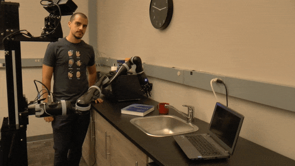
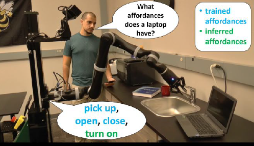
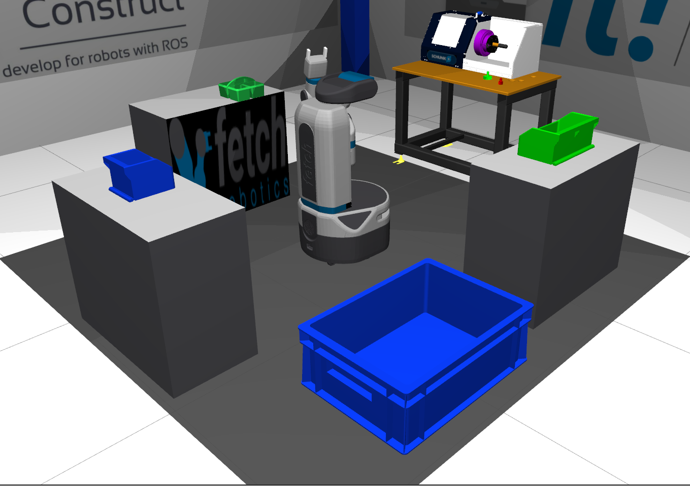
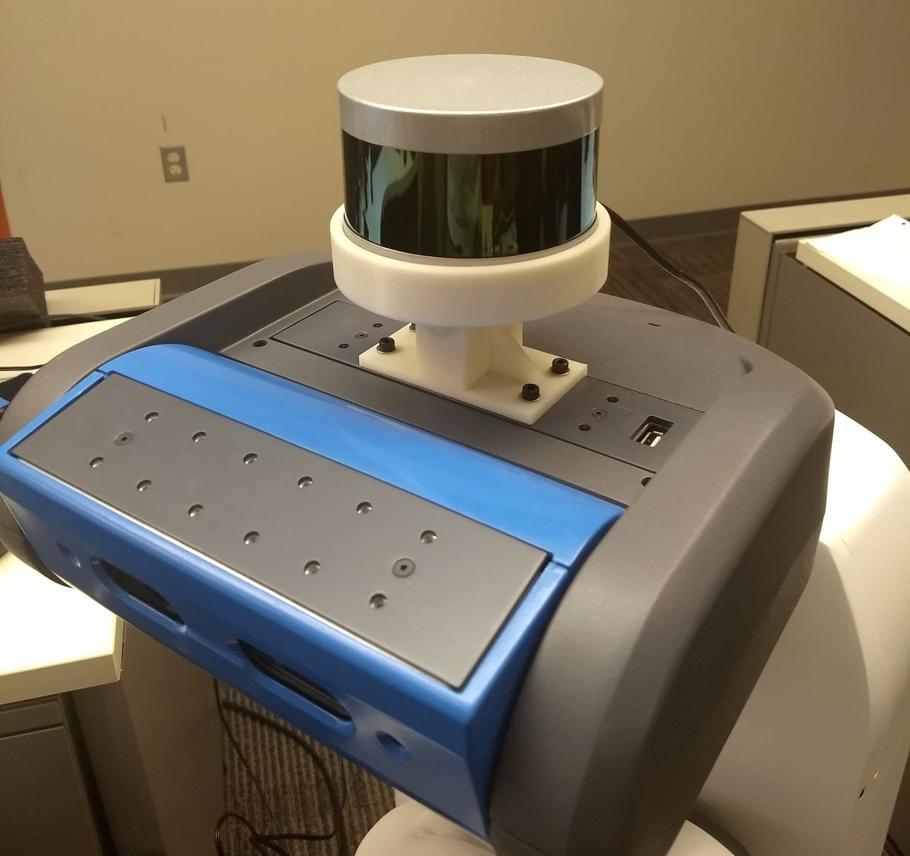
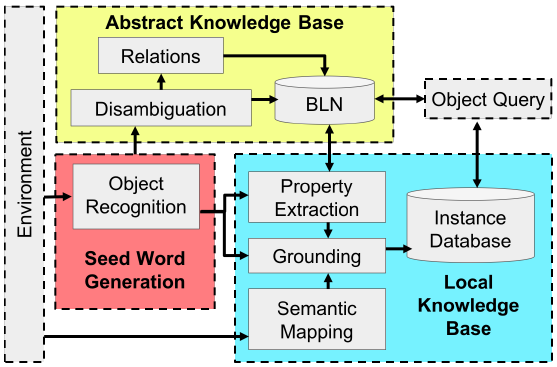
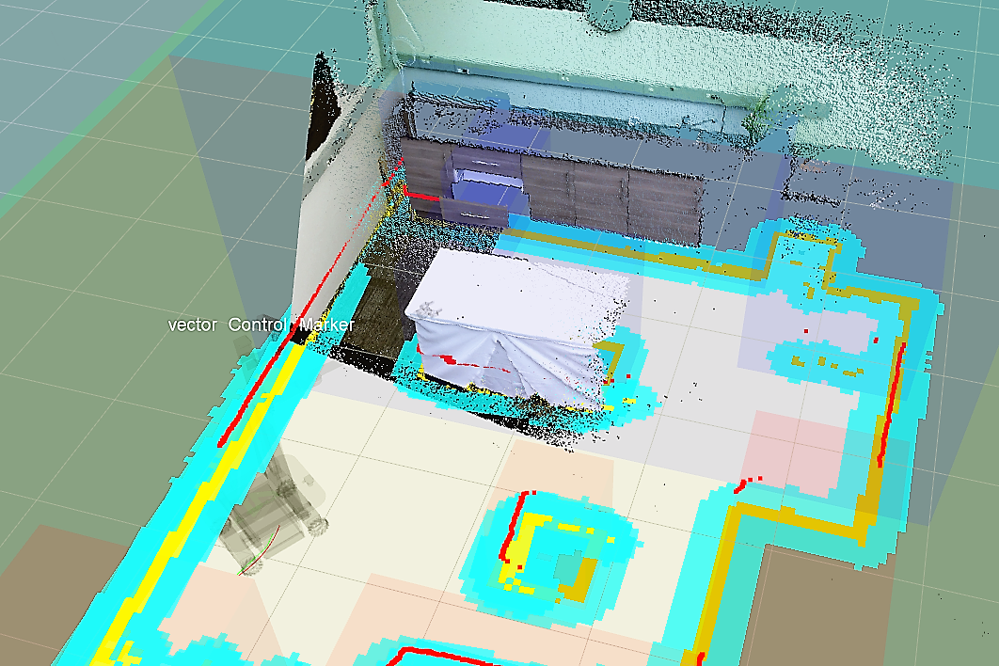
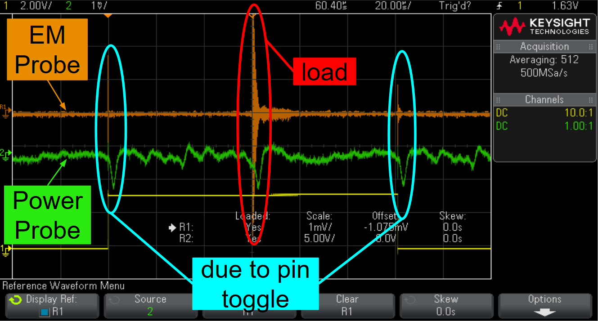

I'm a graduate student working in the
Robot Autonomy and Interactive Learning Lab (RAIL)
at Georgia Tech under Dr. Sonia Chernova. I have research experience
with common sense reasoning and incremental learning for service robots.
I have hands-on experience with mobile-manipulator robots, autonomous nagivation,
perception and localization with semantics, and hardware prototyping.
Publications & otherwise
Items in Review / Pending
- Angel Daruna, Weiyu Liu, Zsolt Kira, Sonia Chernova. "Leveraging Semantics for Incremental Learning in Multi-Realtional Embeddings." IJCAI 2019. In Review.
- Weiyu Liu, Angel Daruna, Zsolt Kira, Sonia Chernova. "Explainable Path Ranking with Attention to Type Hierarchies" IJCAI 2019 2019. In Review.
- Angel Daruna, Weiyu Liu, Zsolt Kira, Sonia Chernova. "RoboCSE: Robot Common Sense Embedding." ICRA 2019. Pending Publication.
Conference / Syposium Articles
- Angel Daruna, Vivian Chu, Weiyu Liu, Meera Hahn, Priyanka Khante, Sonia Chernova, Andrea Thomaz, “SiRoK: Situated Robot Knowledge - Understanding the Balance Between Situated Knowledge and Variability.” AAAI Spring Symposium Series 2018 on Integrating Representation, Reasoning, Learning, and Execution for Goal Directed Autonomy, pp. 516-524, 2018.
- Chernova, Sonia, Vivian Chu, Angel Daruna, Haley Garrison, Meera Hahn, Priyanka Khante, Weiyu Liu, and Andrea Thomaz. "Situated Bayesian Reasoning Framework for Robots Operating in Diverse Everyday Environments." International Symposium on Robotics Research 2017, Santiago, Chile.
- Callan, Robert, et al. "Comparison of electromagnetic side-channel energy available to the attacker from different computer systems." 2015 IEEE International Symposium on Electromagnetic Compatibility (EMC). IEEE, 2015.
- Muthukumar, Vidya, et al. "Whitespaces after the USA's TV incentive auction: A spectrum reallocation case study." 2015 IEEE International Conference on Communications (ICC). IEEE, 2015.
Workshops
- Angel Daruna, Zsolt Kira, Sonia Chernova. "Towards Scalable Semantic Reasoning Frameworks for Robotic Systems" RSS 2018. RSS Workshop.
Previous Projects and Publications

RoboCSE: Robot Common Sesnes Embedding
This work focused on leveraging multi-relational embeddings for semantic reasoning on service robots.

ICRA Fetch-It Challenge 2019
The RAIL lab is participating in the Fetch-It challenge. I am helping with localizaton, navigation, and 3D collision mapping.

Mounting a VLP-16 to the Fetch
Here I worked on prototyping several 3D-printed parts to mount a velodyne to the Fetch. Mounts work for any fetch.

SiRoK: Situated Robot Knowledge
This work focused on leveraging Bayesian Logic Networks to reason about tasks, making robot autonomy more robust.

Natural Language Communicationusing Semantic Mapping
This project uses semantic maps to communicate intelligently about robot, object, and viewpoint locations.

Comparison of electromagnetic side-channel energy available to the attacker from different computer systems
This work measured EM side-channels from FPGAs to investigate the possible exploits available to hackers and inform software programmers and hardware architects about such weaknesses.
Whitespaces after the USA's TVincentive auction: A spectrumreallocation case study
This work speculated the effects to whitespaces caused by an incentive auction. I wrote software that used boolean satisfiability to generate data for the study.